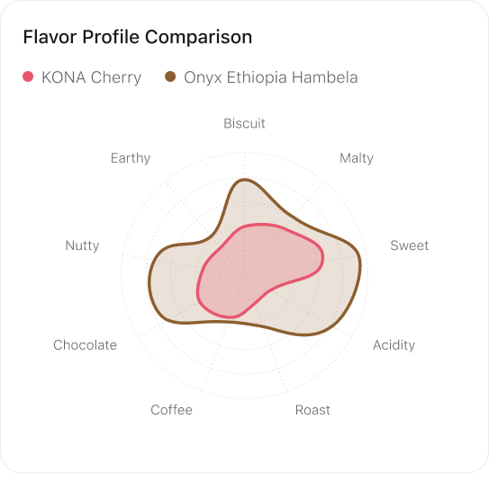
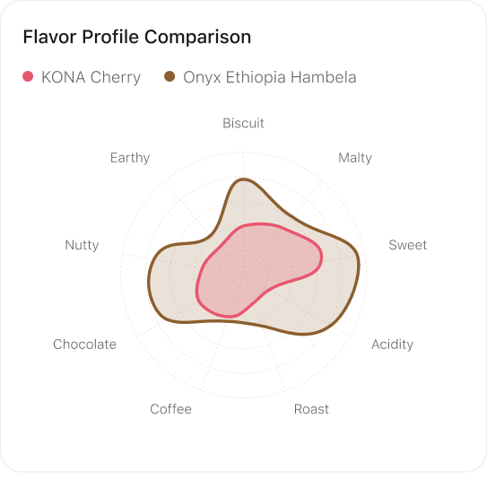

UX Case Study
BeanQuest
A Smart, Low-Risk Coffee Discovery Experience
Helping everyday users explore coffee confidently through AI guidance, sampling, and personalized recommendations.
View Full Case Study →UX Case Study
A Smart, Low-Risk Coffee Discovery Experience
Helping everyday users explore coffee confidently through AI guidance, sampling, and personalized recommendations.
View Full Case Study →Context
Users want to explore flavors, but there's no clear, confident path to what truly fits.
Notes like "Rich & Bold" sound appealing, but users can't tell what they'll actually taste. One wrong bag = $18–30 wasted, and the journey is fragmented across 5–7 websites.
Target Users
Ages 25–40. Tech-comfortable coffee drinkers who brew regularly but aren't experts.
Research
Synthesized from generative research and expert interviews.
User Journey
How motivations and emotions evolve across the coffee buying journey.

Solution
A unified, low-risk, AI-supported discovery system for confident coffee choices.
Behavior-based preference learning that adapts to what you actually like.
Online & offline in one place—"For You" & "Discover More" in a unified app.
Try before you commit with curated sample kits.
Smart guidance with "Why It Wins" reasoning.
Prototype V1
Translating research insights into an initial design concept.

User Testing
90%+ validated the opportunity and solution. Prioritized next steps by user patterns, business value, and technical feasibility.
Core trust driver. No major U.S. coffee app provides AI-integrated reviews — unique market edge with validation & personalization.
Clear UX gains. "Quick AI Compare + Try Sampler" improves discoverability and engagement across segments.
Most coffee e-commerce lacks personalized criteria. Quick to implement contrast cards with transparency improvements.
Common UX fix, essential baseline. Low cost, ships together with Homepage improvements.
U.S. platforms lack transparency. Clear trust & commerce link for strong effect on conversion.
Already common UX at benchmark. Adds inclusivity after core features delivered.
Aspirational, nice-to-have. Valuable for long-term community engagement, not MVP-critical.
Prototype V2
Key improvements based on V1 testing insights.
 

Results
2nd round usability testing validated the design and revealed next iteration opportunities.
SUS Score (Good)
task success rate across 5 tasks
users tested with interviews & SUS evaluation
Positive feedback from participants & instructors
Coffee discovery is driven by desire to explore. HCD isn't only about fixing pain—it's about enabling aspiration.
From scattered behaviors → a clear, desire-driven opportunity.
Comparing directions allowed me to choose the most meaningful, viable path.
User testing refined clarity, confidence, and guidance—core experience qualities.
Translate human insights into coherent systems, not isolated features.
"Human-centered design is not about solving the loudest problem—it's about designing with empathy, clarity, and intention, from understanding people to shaping meaningful experiences."